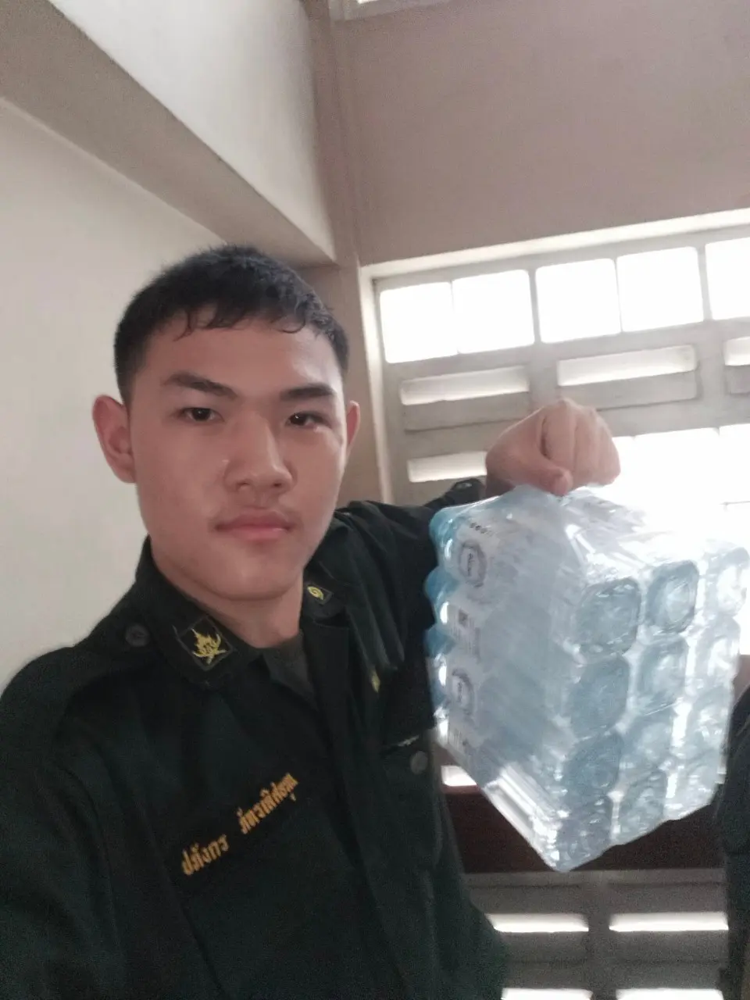
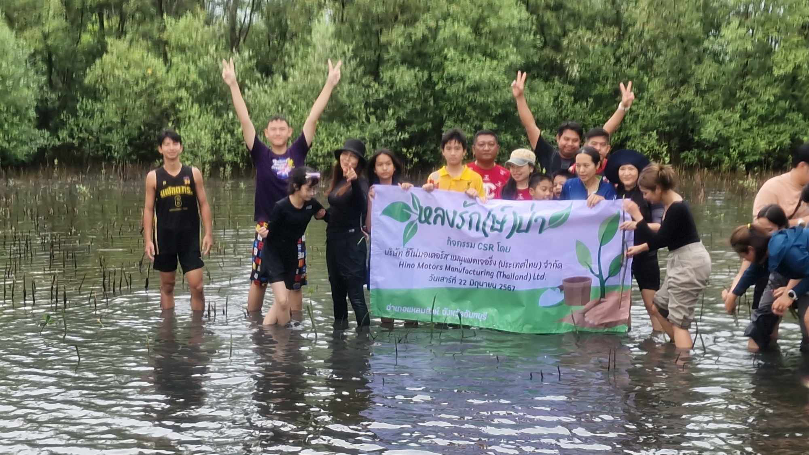
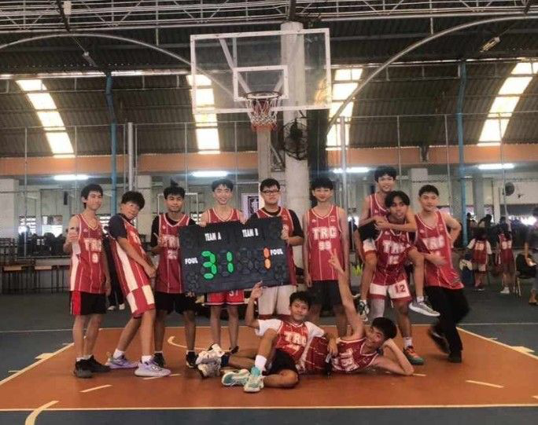
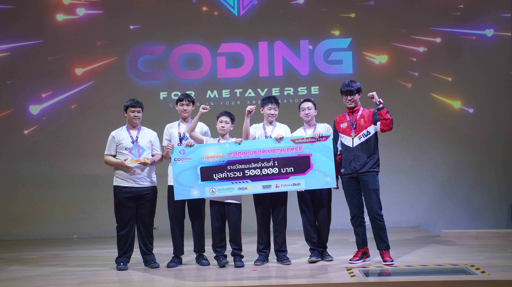
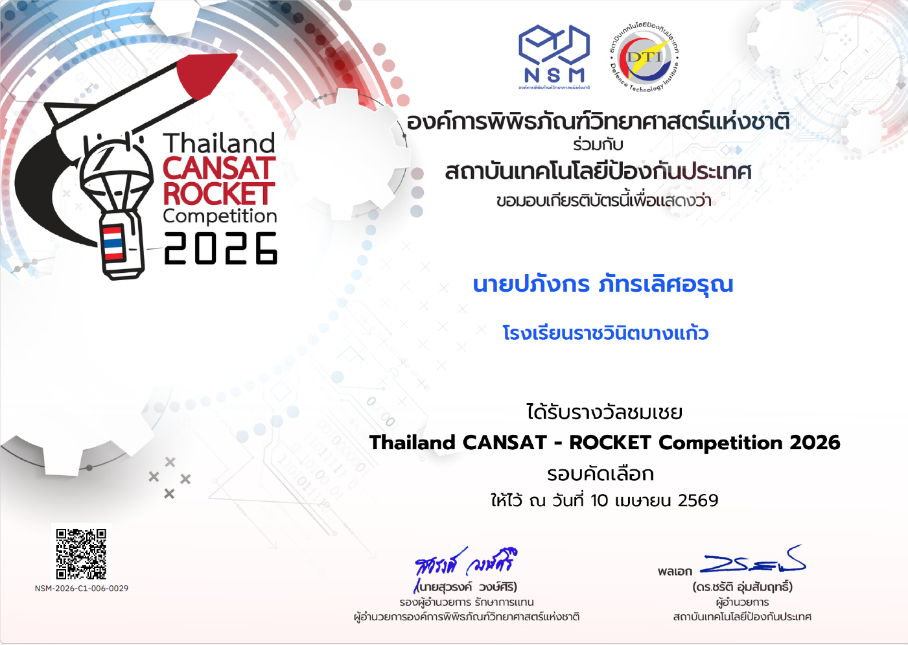
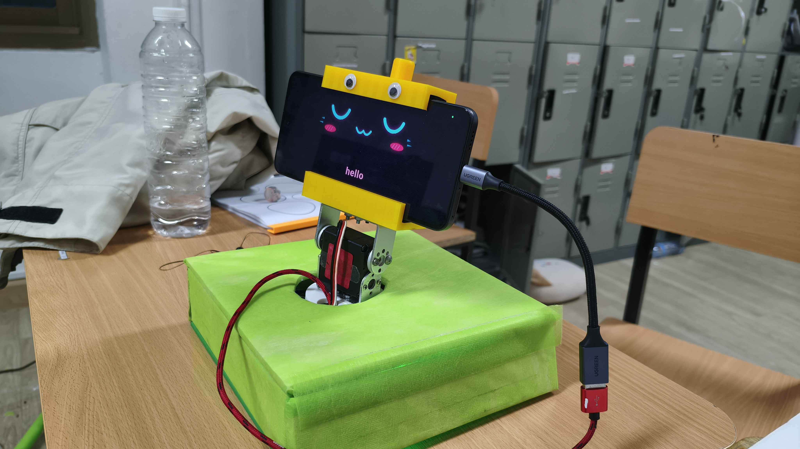
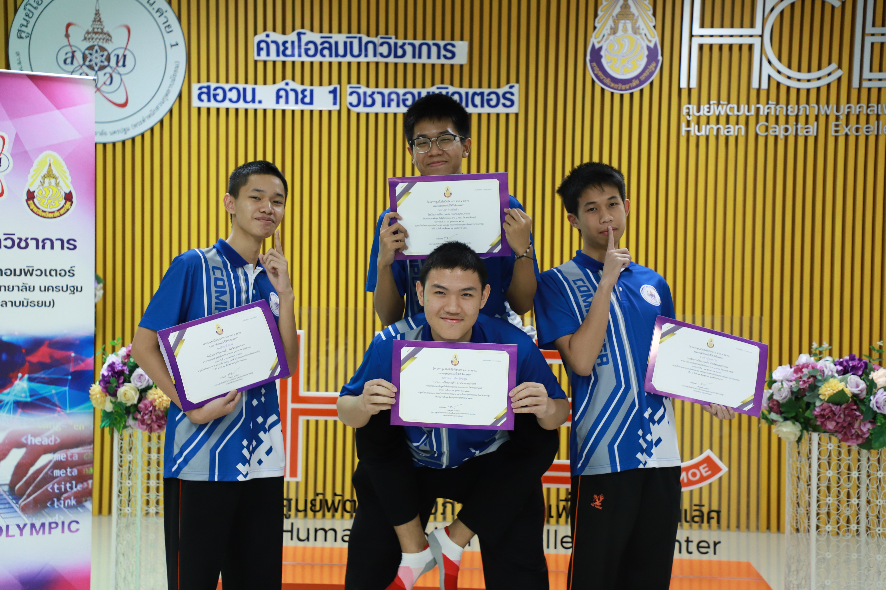

ชื่อ : นายปภังกร ภัทรเลิศอรุณ
วันเกิด : 25 สิงหาคม พศ.2551
Name : Paphangkorn Pataralerdarun
Birthday : August 25 2008
วันเกิด : 25 สิงหาคม พศ.2551
Name : Paphangkorn Pataralerdarun
Birthday : August 25 2008
ศิลป์
เป็นสกิลสายศิลปะ บันเทิง
เอนเตอร์เทน
เอนเตอร์เทน
วิศวกรรม
เป็นความสามารถด้านวิศวกรรม
Hardware
เป็นความสามารถด้านวิศวกรรม ทางด้านฮาร์ดแวร์ เช่น
หุ่นยนต์ การซ่อมคอม ประกอบคอม การประดิษฐ์
หุ่นยนต์ การซ่อมคอม ประกอบคอม การประดิษฐ์
Software
เป็นความสามารถด้านวิศวกรรม ทางด้านซอฟต์แวร์ เช่น
การโค้ดดิ้ง 3D Digital Art เกม
การโค้ดดิ้ง 3D Digital Art เกม
เป็นภาษาโค้ดที่เป็นหน่วยหลักในการใช้บน Roblox
เป็นภาษาโค้ดย่อยออกมาจาก Lua มักใช้ในการโค้ดบน Roblox Studio โดยเฉพาะ
ผลงาน
เป็นผลงานจากกิจกรรมต่าง ๆ ที่เคยเข้าร่วมหรือแข่งขัน
จิตอาสา
เป็นกิจกรรมที่สร้างประโยชน์แก่ผู้อื่นที่ได้เข้าร่วม
รด.จิตอาสา
เป็นกิจกรรมจิตอาสาสำหรับนักศึกษาวิชาทหารรักษาดินแดน
จิตอาสาทั่วไป
เป็นกิจกรรมจิตอาสาที่ผมได้เข้าร่วม
แข่ง
เป็นการแข่งขันต่าง ๆ ที่ได้เข้าร่วม
กิจกรรม
เป็นกิจกรรมต่าง ๆ ที่ได้เข้าร่วม
การสร้างเกมบนPlatfrom Roblox
Click for more
Click for more
ภาษาHTML ใช้ทำโครงสร้างเว็บไซต์ต่าง ๆ รวมถึงใช้ทำเว็บไซต์นี้ด้วย!
ภาษาJava Script ใช้ร่วมกับHTMLและCSS เพื่อโครงสร้างเพิ่มเติม เช่นการลากและเสียงของเว็บไซต์นี้
ภาษาCSS ใช้ตกแต่งหน้าเว็บไซต์ สี ขอบ ความมน กระทั่งตำแหน่งของส่วนประกอบต่าง ๆ
Adobe Premier Pro โปรแกรมตัดต่อ ใช้ในงานสื่อจำพวกVDO ผมใช้ตัดต่อทำยูทูปและใช้ทำงานส่ง
Adobe Illustrator โปรแกรมตัดต่อ
งานกราฟฟิคเวคเตอร์ ผมใช้ทำโปสเตอร์ต่าง ๆ และใช้ทำงานส่ง
งานกราฟฟิคเวคเตอร์ ผมใช้ทำโปสเตอร์ต่าง ๆ และใช้ทำงานส่ง
Adobe Photoshop โปรแกรมตัดต่อรูปภาพ ผมมักใช้คู่กับIllust ใช้แต่งรูป ทำโปสเตอร์และทำปกคลิปยูทูป
FLstudio เป็นโปรแกรมทำเพลง ไม่ว่าจะเป็น เพลง ซาวด์เอฟเฟกต์ หรือบีทต่าง ๆ
Visual Studio Code Editerสำหรับเขียนโค้ดยอดนิยม ผมก็ใช้ตัวนี้แหละในการเขียนโค้ด รวมถึงใช้ทำเว็บเพจนี้ด้วย!
Code Block แอปพลิเคชั่นและคอมไพล์เลอร์สำหรับโค้ดCและC++ที่ยังใช้งานได้ดีอยู่ในยุคนี้ ผมใช้ตอนเข้าค่าย สอวน.คอมพิวเตอร์
ภาษาC เป็นภาษาที่สองที่ผมเขียนเป็นเพราะรร.สอนตอนม.4
ภาษาC++ เป็นภาษาที่ผมมาเรียนก่อนเข้าค่าย สอวน. 1วัน ทำให้ตอนเข้าไปไม่รู้อะไรเลย ;-)
หุ่นยนต์คีบกระป๋อง จากการแข่งขันศิลปหัตถกรรม ครั้งที่70
ดาวเทียมกระป๋อง จากการแข่งขัน Thailand Cansat Rocket Competition 2026
หุ่นยนต์แปลภาษามือ จากการแข่งขัน WRG 2026
กิจกรรมจิตอาสา เก็บขยะในจุดต่าง ๆ รอบพื้นที่โรงเรียน

กิจกรรมจิตอาสา ยืนนำทางขบวนครูเกษียณอายุราชการ

ช่วยครูฝึกยกน้ำจากชั้น1ไปยังร้านขายน้ำชั้น3
ยืนเวรประจำวันหน้าโรงเรียน ช่วยควบคุมการจราจรให้เพื่อนนักเรียนข้ามถนนได้อย่างปลอดภัย

การปลูกป่าชายเลน
ค่อนข้างเปียก
แถมเจอก้อนสาหร่ายด้วย
ค่อนข้างเปียก
แถมเจอก้อนสาหร่ายด้วย

ชนะเลิศอันดับที่หนึ่ง กีฬาบาสเก็ตบอลชาย ระดับชั้น ม.ต้น งานกีฬาประเพณีประดู่แดงเกมส์

ชนะเลิศอันดับที่หนึ่ง ระดับประเทศ
การแข่งขัน Coding for Metaverse
Click for more
การแข่งขัน Coding for Metaverse
Click for more

รองชนะเลิศอันดับที่หนึ่ง ระดับภูมิภาค
การแข่งขันศิลปหัตถกรรม ครั้งที่70
Click for more
การแข่งขันศิลปหัตถกรรม ครั้งที่70
Click for more

รางวัลชมเชย ระดับประเทศ
การแข่งขันThailand Cansat Rocket Competition 2026
Click for more
การแข่งขันThailand Cansat Rocket Competition 2026
Click for more

รองชนะเลิศอันดับที่หนึ่ง ระดับประเทศ
การแข่งขันหุ่นยนต์ WRG 2026
Click for more
การแข่งขันหุ่นยนต์ WRG 2026
Click for more

สอวน.คอมพิวเตอร์ ค่าย1 พ.ศ.2568
Click for more
Click for more

การศึกษาดูโรงงานและดูการแข่งขัน
ที่โรงงานDeltaบางปู
ที่โรงงานDeltaบางปู